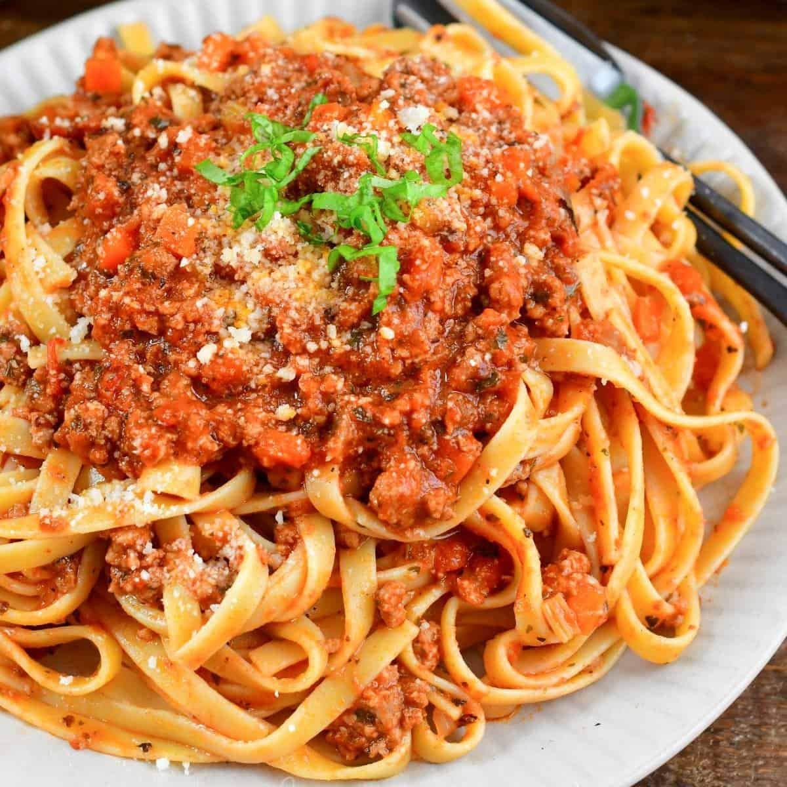

Turkey is substituted for beef in this dreamy Bolognese sauce, plus your picky eaters might not even notice you've snuck some veggies in. Serve with freshly shaved Parmesan cheese if desired.
Bring a large pot of lightly salted water to a boil; cook rotini at a boil until tender yet firm to the bite, about 8 minutes.
Meanwhile, turn on a multi-functional pressure cooker (such as Instant Pot) and select Saute function. Allow pot to get hot, then add turkey, shallot, garlic granules, and Italian seasoning. Cook, breaking up turkey until crumbly and browned, about 5 minutes. Cancel Saute mode. Level out turkey mixture. Spread the carrots and zucchini over the top.
Mix marinara sauce and milk together. Pour over the vegetables. Place cream cheese on top. Do not stir. Close and lock the lid. Select high pressure according to manufacturer's instructions; set timer for 5 minutes. Allow 10 to 15 minutes for pressure to build.
Drain pasta. Release pressure carefully using the quick-release method according to manufacturer's instructions, about 5 minutes. Unlock and remove the lid. Add drained pasta and stir to combine.
You can use any pasta shape you like for this recipe.